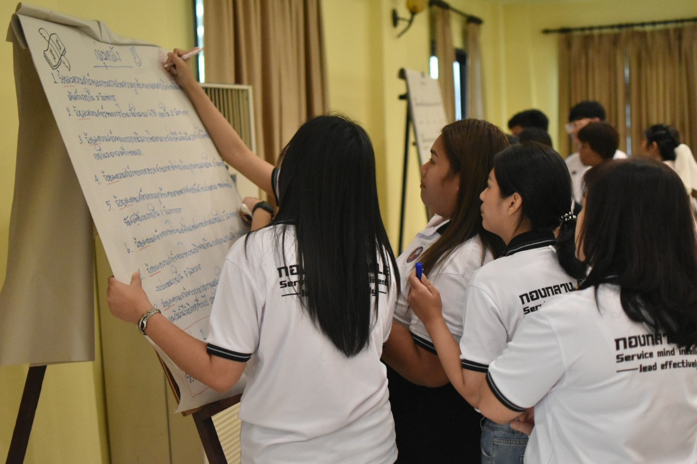
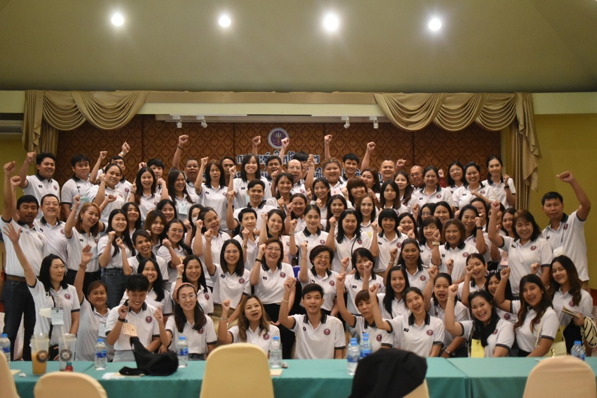
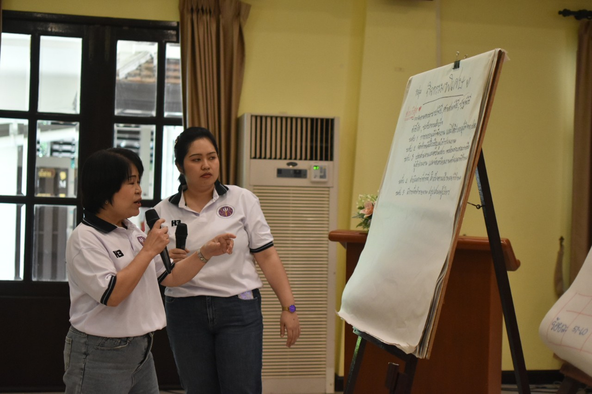
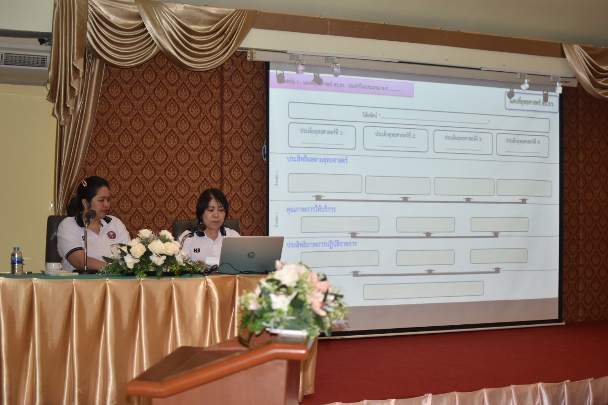

โครงการประชุมเชิงปฏิบัติการ เรื่อง การจัดทำแผนการปฏิบัติการและตัวชี้วัดในการปฏิบัติราชการ ประจำปีงบประมาณ 2567 และศึกษาดูงานเพื่อพัฒนาองค์ความรู้และเพิ่มประสิทธิภาพการปฏิบัติงานของบุคลากร กองกลาง
11 ก.ย. 2566
กพร. ได้เข้าร่วมโครงการประชุมเชิงปฏิบัติการ เรื่อง การจัดทำแผนการปฏิบัติการและตัวชี้วัดในการปฏิบัติราชการ ประจำปีงบประมาณ 2567 และศึกษาดูงาน เพื่อพัฒนาองค์ความรู้และเพิ่มประสิทธิภาพการปฏิบัติงานของบุคลากร กองกลาง ในวันที่ 8 - 10 กันยายน 2566 ณ สถานีวิจัยลำตะคอง และโรงแรม ภูวนาลี เขาใหญ่ จ. นครราชสีมา โดย ผู้ช่วยปลัดกระทรวงการอุดมศึกษา วิทยาศาสตร์ วิจัยและนวัตกรรม กล่าวบรรยาย หัวข้อ "นโยบายและทิศทางการขับเคลื่อนภารกิจของหน่วยงาน" และ ผอ.กพร. กล่าวบรรยาย เรื่อง "การกำหนดตัวชี้วัดและการถ่ายทอดแผนสู่การปฏิบัติ" เพื่อแลกเปลี่ยนเรียนรู้กระบวนการจัดการภายในองค์กร สป.อว.
   